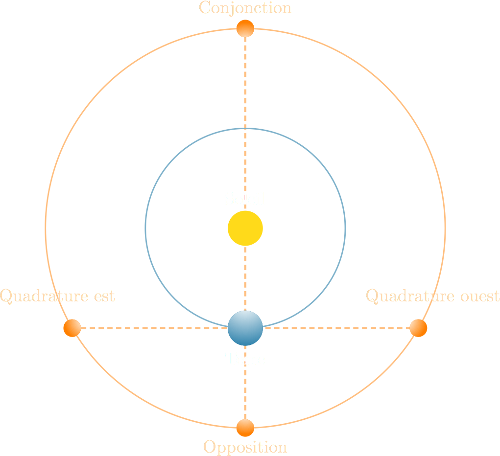

Le système du monde
CEA Explorer et comprendre l’Univers
25 août 2014
Rappels
- Les étoiles ne se déplacent pas les unes par rapport aux autres
- 7 astres errants : * Soleil * Lune * Mercure * Vénus * Mars * Jupiter * Saturne
- Les astres errants se déplacent dans les 12 constellations du zodiaque (le long de l’écliptique)
Certains astres ont une influence sur la Terre
Les marées sont liées au mouvement de la Lune et du Soleil

|
{kind=link}
Les mésopotamiens

Les mésopotamiens et l’astrologie
Développement des mathématiques
Observations astronomiques détaillées
Motivation pour l’étude des astres?
- Décrire leur influence sur les humains
Observations mésopotamiennes
- Observations systématiques de la Lune et du Soleil
- Position des planètes par rapport aux constellations
- Mesure des positions des planètes par rapport au Soleil
Deux sortes d’astres errants
Planètes inférieures
- Mercure et Vénus
- Planètes qui se déplacent avec le Soleil
- Position par rapport au Soleil varie entre deux élongations maximales
Deux sortes d’astres errants
Planètes inférieures

Deux sortes d’astres errants
Planètes supérieures
- Mars, Jupiter, Saturne
- Planètes qui sont parfois en opposition avec le Soleil
- Peut occuper toutes les positions par rapport au Soleil
Deux sortes d’astres errants
Planètes supérieures

Caractéristiques des astres errants
| Astre errant | Temps pour faire un tour des constellations du zodiaque |
|---|---|
| Lune | 27,3 jours |
| Mercure | 1 an |
| Vénus | 1 an |
| Soleil | 1 an |
| Mars | 2 ans |
| Jupiter | 12 ans |
| Saturne | 30 ans |
Observations des grecs
En première approximation, les astres errants
- se déplacent tous d’ouest en est par rapport aux constellations du zodiaque
- ont une vitesse constante
Observations plus raffinées des grecs
- Les planètes supérieures ont parfois un mouvement rétrograde
- La vitesse de chaque planète n’est pas constante : préférence zodiacale